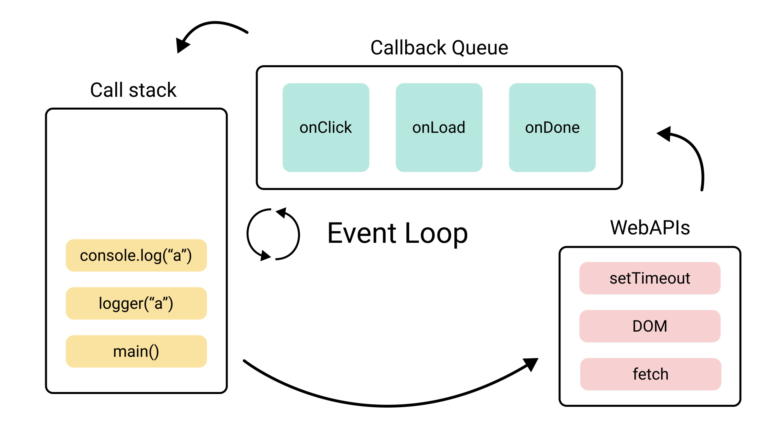
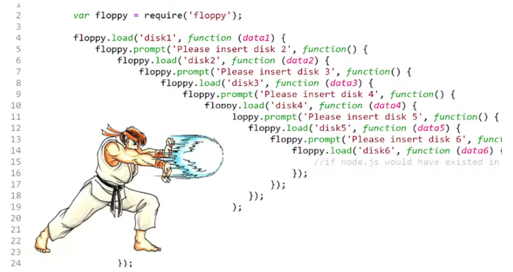
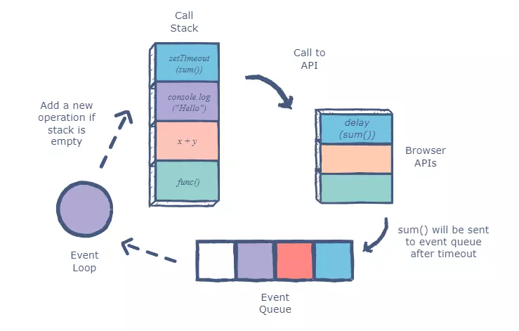

JavaScript Async Programming

Giới thiệu
JavaScript Async Programming là một trong những chủ đề quan trọng nhất trong lập trình web hiện đại. JavaScript là ngôn ngữ đơn luồng (single-threaded), nghĩa là chỉ chạy một tác vụ tại một thời điểm. Vậy làm sao để xử lý nhiều công việc cùng lúc như tải dữ liệu, chờ phản hồi API mà khôngđóng băng trang web? Câu trả lời nằm ở cơ chế bất đồng bộ (asynchronous programming).
1. Bất đồng bộ là gì?
Trong JavaScript, các tác vụ tốn thời gian như đọc file, truy cập API, hay chờ người dùng nhập liệu,
thường được thực hiện theo cách bất đồng bộ – nghĩa là chương trình không chờ chúng hoàn tất mà tiếp tục thực thi phần còn lại.
Cơ chế này được quản lý bởi Event Loop – một vòng lặp theo dõi hàng đợi sự kiện (callback queue) và thực thi chúng khi luồng chính rảnh.

Nhờ cơ chế này, JavaScript có thể thực hiện nhiều tác vụ cùng lúc mà không bị đơ giao diện, giúp chương trình mượt mà và phản hồi nhanh hơn.
“JavaScript không làm mọi thứ cùng lúc – nó biết khi nào nên tạm dừng và khi nào nên tiếp tục.”
2. Callbacks – Cách tiếp cận ban đầu
Callback là hàm được truyền như đối số cho hàm khác, được gọi lại khi tác vụ hoàn tất.
Đây là cách phổ biến để xử lý bất đồng bộ trong JavaScript trước khi Promises và async/await xuất hiện.
function fetchData(callback) {
setTimeout(() => {
console.log("Dữ liệu đã sẵn sàng!");
callback();
}, 2000);
}
fetchData(() => {
console.log("Xử lý dữ liệu sau khi tải xong.");
});Tuy nhiên, khi có nhiều callback lồng nhau, mã trở nên khó đọc và bảo trì — hiện tượng này gọi là “callback hell”.

Cơ chế này giúp lập trình viên dễ dàng thực hiện các thao tác nối tiếp nhau, tuy nhiên khi có nhiều callback lồng vào nhau — ví dụ khi cần tải nhiều dữ liệu hoặc xử lý theo chuỗi — mã sẽ trở nên khó đọc, khó bảo trì, và dễ sinh lỗi.
3. Promises – Giải pháp thay thế hiện đại
Promise ra đời để xử lý bất đồng bộ một cách mạch lạc hơn. Một Promise biểu diễn một giá trị có thể có ngay bây giờ, trong tương lai hoặc không bao giờ có.
const getData = new Promise((resolve, reject) => {
setTimeout(() => {
const success = true;
if (success) resolve("Tải dữ liệu thành công!");
else reject("Lỗi khi tải dữ liệu!");
}, 2000);
});
getData
.then(result => console.log(result))
.catch(error => console.error(error))
.finally(() => console.log("Hoàn tất!"));Nhờ Promise, việc xử lý chuỗi bất đồng bộ trở nên rõ ràng, tránh lồng hàm và dễ debug hơn.
4. Async / Await – Cú pháp gọn gàng hơn
Cú pháp async/await (từ ES8) cho phép bạn viết code bất đồng bộ trông như đồng bộ.
Từ khóa await tạm dừng hàm cho đến khi Promise hoàn tất, giúp mã dễ đọc hơn.
async function fetchUser() {
try {
const response = await fetch("https://api.example.com/user");
const data = await response.json();
console.log("Người dùng:", data);
} catch (error) {
console.error("Lỗi:", error);
} finally {
console.log("Hoàn tất quá trình tải dữ liệu.");
}
}
fetchUser();
Như vậy, bạn có thể dùng async/await kết hợp try...catch để quản lý lỗi tự nhiên như khi viết mã đồng bộ.
5. Promise.all & Promise.race
Khi bạn cần xử lý nhiều Promise cùng lúc (ví dụ tải nhiều API),
các phương thức như Promise.all() và Promise.race() giúp quản lý hiệu quả hơn.
const api1 = fetch("https://api.example.com/posts");
const api2 = fetch("https://api.example.com/comments");
Promise.all([api1, api2])
.then(results => console.log("Tất cả API đã phản hồi:", results))
.catch(err => console.error("Có lỗi xảy ra:", err));
👉 Promise.all() đợi tất cả hoàn tất,
trong khi Promise.race() trả kết quả của Promise hoàn thành đầu tiên.
6. Tổng quan chu trình bất đồng bộ
Một vòng đời của tác vụ bất đồng bộ trong JS có thể mô tả như sau:
- 1. Tác vụ được gửi tới Web API (ví dụ: setTimeout, fetch).
- 2. Khi hoàn tất, callback được đưa vào hàng đợi (Callback Queue).
- 3. Event Loop kiểm tra Stack trống → đẩy callback vào thực thi.

JavaScript hoạt động theo mô hình đơn luồng single-threaded, tức là tại một thời điểm chỉ có thể xử lý một tác vụ trong Call Stack. Tuy nhiên, nhờ cơ chế bất đồng bộ, các tác vụ như setTimeout, fetch, hay xử lý sự kiện (event listener) có thể được giao cho Web APIs để thực hiện song song, trong khi luồng chính vẫn tiếp tục chạy các đoạn mã khác.
Cụ thể, quá trình diễn ra như sau:
setTimeout(sum, 2000)), nó được gửi đến Web API. Web API chịu trách nhiệm xử lý tác vụ này trong nền.sum()) sẽ được đưa vào Event Queue (hàng đợi sự kiện).Call Stack — nếu Stack trống, nó sẽ lấy callback từ Event Queue và đẩy vào Stack để thực thi.Quá trình này giúp JavaScript có thể xử lý đồng thời nhiều tác vụ mà không bịđóng băng giao diện người dùng hoặc dừng chương trình.
“Async programming biến JavaScript từ ngôn ngữ chậm rãi thành công cụ mạnh mẽ cho web hiện đại.”
7. Tổng kết
Hiểu rõ Callbacks, Promises và Async/Await giúp bạn viết mã dễ đọc, hiệu quả và tránh lỗi phổ biến trong xử lý bất đồng bộ.
👉 Hãy thử viết một hàm gọi API thật, hiển thị dữ liệu và xử lý lỗi để cảm nhận sự khác biệt giữa callback và async/await.
“Async/Await – cú pháp khiến JavaScript bất đồng bộ trở nên dễ hiểu và thân thiện hơn bao giờ hết.”